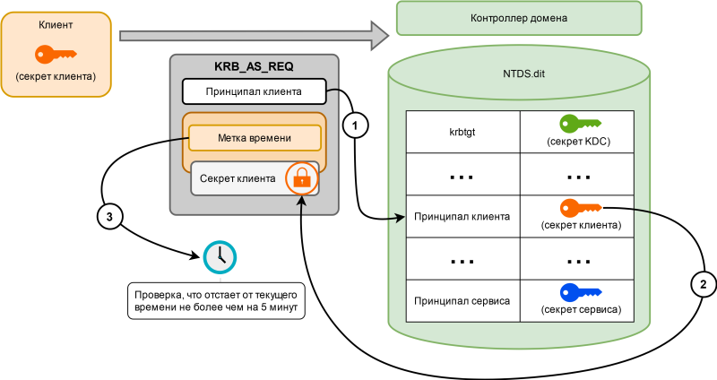

Вступление
На мой взгляд специалисту по тестированию на проникновение инфраструктуры на базе Active Directory важно понимать общее устройство протокола Kerberos. Вот лишь несколько причин почему:
- Знание устройства протокола Kerberos необходимо для понимания ряда классических атак.
- Периодически появляются новые атаки, но прежде чем приступать к их эксплуатации, необходимо разобраться к каким последствиям они могут привести. Без знания Kerberos это порой затруднительно, либо вовсе невозможно.
- Личная чуйка, что если человек называет себя специалистом, то он должен обладать несколько более глубокими знаниями, чем название инструмента или кнопки, на которую надо нажать.
Про Kerberos и атаки на него уже написано немало статей. Многие из указанных статей предназначены либо для математиков, либо для сетевых инженеров, либо для специалистов по тестированию на проникновение. Материал часто преподносится однобоко в разрозненной форме и приходится тратить много времени для отбора действительно полезных работ и их склейки на полях личных заметок.
В этом цикле статей буду пытаться разобрать, как в теории устроен протокол Kerberos и какие атаки с его использованием можно осуществить на практике в Active Directory. Также будут приведены некоторые рекомендации по противодействию рассматриваемым атакам.
В первой части будет рассмотрено устройство Kerberos в общем случае, а также реализация Kerberos в Active Directory.
К материалу не стоит относится как к истине в последней инстанции. Только дураки не сомневаются.
Экскурс. Краткий и исторический
Протокол Kerberos был разработан в MIT, как часть научно-исследовательского проекта Афина, предназначенного для создания распределенной образовательной среды. К 1988 году проект достиг поставленных целей. В частности, было опубликовано описание протокола Kerberos v4, являющегося основой системы единого входа в разработанную среду. Предыдущие версии 1-3 были ранними прототипами и не использовались за пределами MIT.
В 1989 году состоялся официальный релиз Kerberos v4.
Однако протоколу было куда развиваться. Например, можно выделить следующие недостатки Kerberos v4:
- Использование слабых криптографических алгоритмов.
- Уязвимости в архитектуре протокола, позволяющие проводить ряд атак методом оффлайн-перебора в отношение паролей пользователей.
- Отсутствие возможности делегирования учетных данных или использования дополнительных факторов аутентификации.
C целью устранения приведенных недостатков в 1993 году вышел новый протокол Kerberos v5.
В 1999 году Microsoft объявила о поддержке Kerberos v5 в своей будущей операционной системе Windows 2000, что было впоследствии реализовано в качестве соответствующего компонента Active Directory. До этого для аутентификации в рабочих группах на базе операционной системы Windows использовался протокол NT LAN Manager (NTLM), одна из версий которого (NTLM v2) применяется для локальной аутентификации в современных системах до сих пор. Подробное рассмотрение протокола NTLM v2 выходит за рамки статьи. Важно отметить, что указанный протокол также обладает рядом недостатков, которые было решено избежать при внедрении Kerberos v5 в Windows 2000.
В настоящее время Kerberos v5 можно считать довольно возрастным протоколом, тем не менее он используется во множестве различных систем, а не только в Active Directory. Вот неполный перечень:
- Amazon Web Services
- Apple macOS
- Google Cloud
- Microsoft Azure
- Oracle Solaris
- Red Hat Linux
Всюду далее речь будет идти именно о Kerberos v5. Для читаемости Kerberos v5 будет называться просто Kerberos.
Требования к протоколу Kerberos
Разобраться с принципом работы протокола Kerberos поначалу не просто. Постоянно приходится перечитывать ранее изученный материал и держать в голове множество деталей. Периодически возникает вопрос: почему все так сложно устроено?
Чтобы корректно ответить на заданный вопрос и, что не менее важно, понять ответ, требуется обладать познаниями в устройстве криптографических протоколов, а также смежных дисциплинах. Полагаю, что копать настолько глубоко смысла нет. Все же чтобы понимать, чем обусловлены навороты Kerberos приведу ряд требований, которым протокол должен был отвечать:
-
Подразумевается, что обмен сообщений осуществляется с доверенных устройств, но в открытой недоверенной среде. Сетевой трафик может быть прослушан злоумышленником, а передаваемые сообщения могут быть подменены или перенаправлены. Таким образом секреты участников протокола ни при каких условиях не должны передаваться по сети в открытом виде.
Любопытный факт: Kerberos разрабатывался до появления SSL.
-
Информация о пользователях и их секретах должна хранится в выделенном месте. Это ограничение обусловлено следующими соображениями:
- Необходимо минимизировать количество критических объектов, которые требуется защищать.
- Добавление нового, удаление старого, изменение текущего секрета у клиента или сервиса не должно требовать уведомления всех остальных участников протокола. Думаю, полезной будет следующая иллюстрация:

- Должна поддерживаться технология единого входа (Single Sign-On). Это ограничение обусловлено тем, что пользователю неудобно каждый раз при обращении к ресурсу заново вводить пароль.
- Успешное окончание работы протокола должно означать успешную взаимную аутентификацию сторон.
- В результате работы протокола между клиентом и сервисом должен быть сформирован секретный сессионный ключ. Знание сессионного ключа позволяет злоумышленнику расшифровать некоторые старые сообщения, но организовать новую сессию с использованием уже известного сессионного ключа не получится.
Список терминов
Прежде чем приступить к технической части определимся с терминологией, чтобы в дальнейшем избежать путаницы.
Kerberos – в первую очередь протокол аутентификации, но при этом предусматривающий возможность транспортировки информации необходимой для авторизации.
Важно не путать:
Аутентификация – процесс проверки подлинности. То есть проверка того, что пользователь, пытающийся получить доступ к системе именно тот, за кого себя выдает.
Авторизация – процесс проверки прав доступа. Авторизация может быть применена только к аутентифицированному пользователю, так как перед тем, как проверять права доступа, необходимо выяснить личность объекта, которому указанные права планируется предоставить.
Сервер – сетевой объект, обеспечивающий функционирование одного или нескольких сервисов. Примеры серверов: файловый сервер, почтовый сервер.
Клиент – объект, обращающийся к сервису с целью получения доступа к ресурсам. Примеры клиентов: учетная запись или рабочая станция пользователя.
Область действия (Realm) – совокупность клиентов, серверов и сервисов, участвующих в протоколе Kerberos.
Принципал (Principal) – это строка, полностью идентифицирующая участника протокола Kerberos.
Принципал может быть именем сервиса (Service Principal Name), или именем клиента (User Principal Name). Форматы принципалов для клиентов и сервисов различаются.
Принципал клиента имеет следующую форму: principal-name[/instance-name]@REALM Пример: имя пользователя - Ivan, а область действия - DOMAIN.LOCAL, то полный принципал будет Ivan@DOMAIN.LOCAL.
Расширение instance-name является опциональным и позволяет любому пользователю иметь более одного принципала. Так, если Ivan является администратором области DOMAIN.LOCAL, имя принципала будет Ivan/admin@DOMAIN.LOCAL, и у этого принципала будут другие права (и удостоверяющие данные).
Принципал сервиса имеет следующую форму: service-name/host[:port]@REALM, где
- service-name – это специфичная для приложения строка, идентифицирующая сервис на этом хосте.
- host – это доменное имя хоста, на котором работает сервис
- port - порт на котором запущена служба.
Пример: для сервиса ftp, работающего на хосте с именем fileserver.example.com в области @EXAMPLE.COM, имя принципала сервиса будет ftp/fileserver.example.com@EXAMPLE.COM.
Почему такое внимание уделяется этим именам? В дальнейшем будет понятнее, но уже сейчас можно отметить, что в Kerberos для идентификации сервера требуется именно принципал (имя), тогда как в NTLM может использоваться IP-адрес.
Примечание: возможность использования IP-адресов была добавлена в новых клиентах Windows.
Рассмотрим пример: есть рабочая станция (DNS-имя: station.domain.local, IP-адрес: 192.168.10.12) с общедоступной сетевой папкой scan. При открытии проводника и переходу по UNC-пути \\station.domain.local\scan будет использоваться Kerberos, но при указании UNC-пути \\192.168.10.12\scan будет использоваться NTLM, так как принципал отсутствует. В частности, поэтому администраторы не любят отключать NTLM, так как устаревшее сетевое оборудование (принтеры, роутеры и пр.) может быть настроено со статическими IP-адресами или вовсе не поддерживать Kerberos.
Центр распределения ключей (Key Distribution Center, далее – KDC) является доверенным центром аутентификации для всех участников протокола Kerberos в рамках определенной области действия.
KDC включает в себя следующие компоненты:
- База данных Kerberos, предназначенная для хранения информации о всех принципалах и их секретах.
- Сервер аутентификации (Authentication Server, AS), обрабатывающий запросы на аутентификацию клиентов к области действия протокола Kerberos;
- Сервер выдачи разрешений (Ticket Granting Server, TGS), обрабатывающий запросы на аутентификацию к определенному сервису, функционирующего в составе указанной области действия.
Проиллюстрируем вышесказанное следующей зарисовкой:
Аутентификация с использованием Kerberos
Начнем от общего и перейдем к частному.
Житейская аналогия
Рассмотрим немного выдуманную, но полезную для последующих аналогий ситуацию. Представим парк развлечений. Допустим, что перечень разрешенных посетителей парка содержится в специальной базе данных. Для тех, кто в базе отсутствует проход воспрещен. Как организовано посещение парка:
- Посетитель приходит на вход и показывает охраннику свой паспорт.
- Охранник проверяет наличие посетителя в базе данных.
- Охранник выдает посетителю суточный билет на посещение парка.
- Посетитель выбирает понравившийся ему аттракцион и идет на кассу, чтобы получить билет.
- На кассе проверяют суточный билет посетителя и выдают билет на аттракцион.
- Посетитель идет на выбранный аттракцион и показывает смотрителю аттракциона, полученный на кассе билет.
- Смотритель проверяет билет и пропускает посетителя.
- Посетитель при желании может посмотреть бейджик смотрителя, чтобы убедиться, что он действительно сотрудник парка.
Если посетитель захотел пойти на другой аттракцион, он снова идет на кассу и показывает суточный билет. Далее повторяется процесс из шагов 5, 6, 7 только с другим смотрителем и другим аттракционом.
По верхам в общем виде
Теперь по аналогии рассмотрим упрощенную схему аутентификации с использованием Kerberos:
- Клиент отправляет запрос на аутентификацию к области действия.
- Сервер аутентификации проверяет подлинность Клиента с использованием Базы данных Kerberos.
- Сервер выдает Клиенту разрешение (пока просто назовем его TGT) на получение отдельных разрешений (далее – ST), требующимся для доступа к сервисам, входящим в область действия.
- С использованием полученного на шаге №3 разрешения (TGT) Клиент запрашивает разрешение на доступ к Сервису А («ST для А»).
- Сервер выдачи разрешений проверяет TGT и выдает Клиенту ST для доступа к сервису А.
- Клиент с использованием «ST для А» запрашивает у Сервиса А доступ к его ресурсам.
- Сервис А проверяет «ST для А» и предоставляет Клиенту доступ к своим ресурсам. При необходимости сервис также проходит аутентификацию перед клиентом.
В дальнейшем при необходимости доступа к другому сервису:
- С использованием полученного на шаге №3 разрешения (TGT) Клиент запрашивает разрешение на доступ к Сервису Б («ST для Б»).
- Сервер выдачи разрешений проверяет TGT и выдает Клиенту ST для доступа к сервису Б.
- Клиент с использованием «ST для Б» запрашивает у Сервиса Б доступ к его ресурсам.
- Сервис Б проверяет «ST для Б» и предоставляет Клиенту доступ к своим ресурсам.
Видно, что стороны обмениваются сообщениями, содержащими запросы и ответы с разрешениями. Официально форматы указанных сообщений задокументированы в RFC 4120.
Теперь переназовем передаваемые сообщения в соответствие с RFC:
- Запрос на аутентификацию к области действия (шаг 1) - сообщение KRB_AS_REQ.
- Ответ сервера на запрос аутентификации клиента (шаг 3) – сообщение KRB_AS_REP.
- Разрешение на получение разрешений – TGT (Ticket Granting Ticket).
Другие встречающиеся в литературе названия: мандат / билет на получение разрешений, первичное удостоверение пользователя.
Примечание: в различных источниках часто встречается словосочетание «TGT билет», но в аббревиатуре TGT уже заложено слово «билет» - Ticket Granting Ticket, поэтому правильнее говорить просто «TGT».
-
Запрос на доступ к сервису (шаг 4) – сообщение KRB_TGS_REQ.
-
Ответ сервера выдачи разрешений (шаг 5) – сообщение KRB_TGS_REP.
-
Разрешение на доступ к сервису – ST (Service Ticket) Другие встречающиеся названия: TGS билет, билет сервиса, мандат сервиса.
-
Запрос клиента на аутентификацию к сервису (шаг 6) – сообщение KRB_AP_REQ.
-
Опциональный ответ с аутентификацией сервиса перед клиентом (шаг 7) – сообщение KRB_AP_REP.
Чтобы проще было запомнить:
- KRB ~ KeRBeros
- AS ~ Authentication Server
- REP ~ REsPonse
- REQ ~ REQuest
- AP ~ APplication server
Далее каждый запрос будет разобран подробнее.
Разбор аутентификации в Kerberos согласно RFC
В начале имеются три участника протокола Kerberos:
- Клиент
- Сервис
- Центр распределения ключей
Каждый из участников обладает своим долговременным секретом (ключом). Кроме того, центр распределения ключей обладает секретами всех участников.
Алгоритм формирования ключа
Ключ формируется как результат работы хэш-функции под названием string2key. Хэш может вычисляться разными способами в зависимости от соответствующих настроек Kerberos, в частности поддерживаются следующие алгоритмы:
| Название алгоритма (etype) | Способ вычисления ключа |
|---|---|
| RC4_HMAC_MD5 | NT-хэш пароля участника |
| AES128_CTS_HMAC_SHA1_96 | PBKDF2(пароль, соль*, kvno**, 128) |
| AES256_CTS_HMAC_SHA1_96 | PBKDF2(пароль, соль*, kvno**, 256) |
В последних версиях Windows по умолчанию используется шифрование AES. Но для совместимости с системами ниже Windows Vista и Windows 2008 Server необходима поддержка алгоритма RC4.
Соль формируется следующим образом:
-
Для доменных пользователей: полностью определенное имя домена заглавными буквами (FQDN) + регистр зависимое имя пользователя.
Пример: DOMAIN.LOCALuser
-
Для компьютеров: FQDN + host + регистр зависимое имя компьютера без $ в конце.
Пример: DOMAIN.LOCALhostcomputer.domain.local
kvno - key version number (в переводе - номер версии ключа). kvno представляет собой счетчик, увеличивающий значение каждый раз при смене пароля.
Таким образом, у одного и того же пользователя в разных доменах или для разных учетных записей будут разные секреты (хэши паролей), даже если пароль одинаковый. То есть строить радужные таблицы для указанных хэшей нецелесообразно.
Источники:
KRB_AS_REQ
Клиент отправляет серверу аутентификации запрос, содержащий:
- Принципал клиента
- Срок жизни билета
Примечание: если это не первый материал по Kerberos, который вы читаете и возникает вопрос, почему отсутствует предварительная аутентификации, то поясню – это дополнительная настройка протокола, которая в «классической» реализации по умолчанию отключена. В реализации Kerberos для Active Directory, указанная настройка напротив по умолчанию активна и этот случай будет рассмотрен чуть позже.
KRB_AS_REP
Сервер аутентификации по полученному принципалу находит в базе Kerberos секрет клиента. Кроме того, для дальнейшего общения с KDC сервер аутентификации случайным образом генерирует сессионный ключ. В итоге в ответ клиенту отправляются два сообщения.
Первое сообщение зашифровано с использованием секрета клиента и содержит:
- Сессионный ключ для KDC
- Метка времени
- Срок жизни TGT
Второе сообщение (TGT) зашифровано уже с использованием (!) секрета KDC и включает в себя те же самые данные, что и первое сообщение, но вместе с принципалом клиента.
Примечание: время жизни TGT определяется, как наименьшее время среди запрошенного клиентом и хранящегося в настройках центра распределения ключей.
Клиент, приняв ответ, может расшифровать только первое сообщение. Таким образом он получает сессионный ключ для дальнейшего общения с KDC. TGT также сохраняется у клиента в зашифрованном виде.
KRB_TGS_REQ
Теперь, пройдя аутентификацию, клиент желает получить доступ к какому-то сервису. Для этого он отправляет серверу выдачи разрешений запрос, содержащий:
- Принципал сервиса
- Аутентификатор, состоящий из принципала клиента и метки времени, зашифрованных с использованием извлеченного ранее сессионного ключа для общения с KDC.
- Сохраненный TGT
Приняв запрос, сервер выдачи разрешений прежде всего выполняет проверку полученных данных. Сначала с использованием секрета KDC сервер расшифровывает TGT (1) и по метке времени со сроком действия убеждается, что TGT не протух (2).
Далее сервер извлекает сессионный ключ для KDC. Несмотря на то, что указанный ключ был создан в KDC, нужды хранить его в базе Kerberos нет. Действительно, TGT не может быть изменен кем-либо кроме KDC, поэтому полученным из него данным можно доверять.
Возникает важный вопрос - почему можно быть уверенным, что TGT не отправлен злоумышленником, перехватившим его при прослушивании сетевого трафика? Для этого в запросе прилагается аутентификатор. Аутентификатор зашифрован с использованием сессионного ключа KDC, который мог быть извлечен из KRB_AS_REP запроса только определенным клиентом. Метка времени добавляется с целью предотвращения атак методом повтора, чтобы злоумышленник не смог вставить в свой запрос старый аутентификатор клиента, перехваченный из прошлых сообщений.
Сервер выдачи разрешений сравнивает принципалы пользователя из TGT и аутентификатора, а также убеждается, что аутентификатор был сформирован не более двух минут назад.
KRB_TGS_REP
В случае успешного завершения проверок сервер выдачи разрешений отправляет клиенту ответ, содержащий два сообщения. Первое сообщение зашифровано с использованием сессионного ключа для KDC и содержит:
- Сессионный ключ для общения с сервисом
- Метка времени
- Срок жизни TGS билета
- Принципал сервиса
Второе сообщение (TGS билет) зашифровано с использованием секрета сервиса и включает в себя те же самые данные, что и первое сообщение, а также принципал клиента.
Клиент, приняв ответ, может расшифровать только первое сообщение. Таким образом он получает сессионный ключ для дальнейшего общения с сервисом. TGS билет сохраняется у клиента в зашифрованном виде.
KRB_AP_REQ
Клиент отправляет сервису запрос на получение доступа, содержащий:
- Аутентификатор, состоящий из принципала клиента и метки времени, зашифрованных с использованием извлеченного ранее сессионного ключа для общения с сервисом.
- Сохраненный TGS билет
- Флаг взаимной аутентификации
Приняв запрос, сервис прежде всего выполняет проверку полученных данных. Сначала с использованием своего секрета сервис расшифровывает TGS (1) и по метке времени со сроком действия убеждается, что TGS не протух (2). Далее сервис извлекает сессионный ключ.
TGS билет не может быть изменен кем-либо кроме того, кто знает секрет сервиса, а это KDC и сам сервис. Сервис доверяет KDC, таким образом извлеченным из TGS билета данным сервис также может доверять.
Аналогично KRB_TGS_REQ расшифровывается аутентификатор и выполняются другие проверки. Обратите внимание, что сервис удостоверяется в подлинности клиента, не обращаясь к KDC.
KRB_AP_REP
Опционально, в случае если активен флаг взаимной аутентификации, сервис также подтверждает перед клиентом свою подлинность, отправив ответ с меткой времени, зашифрованной с использованием сессионного ключа.
Kerberos в Active Directory
«Чтобы донести идею её надо рассказать три раза, но разными словами» (с)
Рассмотрим реализацию Kerberos в Active Directory. Уточним терминологию, теперь:
Область действия – домен.
Центр распределения ключей – контроллер домена.
Сервер аутентификации и сервер выдачи разрешений – оба объединены в рамках одного компонента, функционирующего на контроллере домена.
База данных Kerberos – в Active Directory информация о секретах пользователей хранится на контроллерах домена в файле ntds.dit.
krbtgt – название учетной записи, по умолчанию создаваемой вместе с доменом и обладающей секретом контроллера домена.
В итоге с учетом переименований получается следующая структура:

В целом в Active Directory Kerberos работает согласно RFC, но есть ряд особенностей. Рассмотрим указанные особенности на следующем примере.
Доменная аутентификация пользователя к рабочей станции в Active Directory
Изначально на рабочей станции активно следующее диалоговое окно:
Пользователь вводит свои учетные данные (название домена, имя учетной записи, пароль) и жмет «OK». Далее компонент, ответственный за отображение диалогового окна, передает запрос на аутентификацию пользователя с использованием введенных данных в локальный центр безопасности (Local Security Authority, LSA). Центр содержит различные динамические библиотеки, предоставляющие функции для процедур аутентификации, смены паролей, а также выдачи токенов. Указанные библиотеки вызываются и работают в контексте процесса lsass.exe (Local Security Authority Subsystem Service).
В зависимости от запроса для его обработки согласовывается соответствующая библиотека. Примеры библиотек и протоколов:
- msv1_0.dll (NTLM)
- kerberos.dll (Kerberos)
- SChannel.dll (TLS/SSL)
- WDigest.dll (digest аутентификация)
По умолчанию для обработки запросов на проверку подлинности пользователя при входе в домен выбирается библиотека kerberos.dll, реализующая одноименный протокол.
Следует понимать, что пользователь никогда напрямую не взаимодействует с системой. Система олицетворяет пользователя и получает доступ к необходимым ресурсам с использованием прав доступа, которыми указанный пользователь обладает. Таким образом систему в ходе аутентификации можно рассматривать как сервис.
В итоге имеем следующую картину:
Секрет системы (ключ) присваивается рабочей станции при ее добавлении в домен. Важно отметить, что введенный пользователем пароль не хранится в памяти рабочей станции. Ключ пользователя формируется при помощи ранее рассмотренной хэш-функции string2key.
Далее процесс, обеспечивающий аутентификацию пользователя, обращается к контроллеру домена с использованием сформированного ключа. Здесь проявляется одна из особенностей реализации Kerberos в Active Directory – предварительная аутентификация по умолчанию включена.
KRB_AS_REQ с предварительной аутентификацией

В этом случае клиент отправляет серверу аутентификации запрос, содержащий:
- Принципал клиента
- Метку времени, зашифрованную с использованием секрета клиента
Получив запрос, контроллер домена с помощью секрета клиента расшифровывает метку времени и сравнивает её с текущим значением. Если переданное время расходится с текущим меньше чем на пять минут, то значит предварительная аутентификация клиента успешно пройдена. В противном случае контроллер отправляет сообщение об ошибке.
KRB_AS_REP (AD)
В случае успешного прохождения предварительной аутентификации контроллер домена отправляет рабочей станции ответ, аналогичный рассмотренному в разделе про RFC.
В ответе появилась еще одна особенность, а именно новое поле «PAC» в содержимом TGT.
PAC (Privilege Attribute Certificate) это данные, предназначенные для авторизации пользователя. Ранее уже отмечалось, что кроме аутентификации Kerberos может использоваться при авторизации, но не пояснялось как. Поле PAC изначально было предусмотрено в RFC без конкретного описания содержимого. Какая информация передается в PAC и как она обрабатывается зависит от конкретной реализации Kerberos.
В Active Directory PAC среди прочего содержит следующую информацию:
- Идентификатор безопасности (SID) учетной записи пользователя
- Идентификаторы групп, в которых состоит пользователь
Указанная информация дважды подписывается. Одна подпись принадлежит krbtgt, а вторая сервису, к которому обращался клиент (в случае KRB_AS_REP тоже krbtgt).
KRB_TGS_REQ (AD)
Запрос производится аналогично рассмотренному ранее в RFC.
KRB_TGS_REP (AD)
PAC из TGT, полученный в предыдущем сообщении, помещается в TGS билет. В этот раз PAC подписывается не только с использованием секрета krbtgt, но и секрета системы.
LOGON
С использованием сессионного ключа LSA извлекает подписанный PAC из TGS билета. LSA проверяет подпись PAC при помощи секрета системы и далее с учетом добытых из PAC доменных групп безопасности формирует процесс Winlogon c соответствующим токеном доступа клиента.

Опционально система может запросить контроллер домена выполнить дополнительную проверку подписи с PAC с помощью секрета krbtgt.
Итог
Думаю, для поверхностного знакомства с Kerberos достаточно. Несмотря на то, что многие моменты остались за скобками, представленного материала в целом хватает для понимания атак на протокол Kerberos, которые рассмотрим в следующей части.
Ссылки на используемые источники
- Kerberos Protocol Tutorial (Fulvio Ricciardi)
- Kerberos and Windows Security Series (Robert Broeckelmann)
- Статья с pro-ldap.ru
- Блог Pixis
- Фундаментальная статья c tarlogic.com (Eloy Pérez)
- Документация Microsoft
- How to Kerberos? its components and function (Sheeraz Ali)
- Windows authentication attacks part 2 – kerberos (Ahmed Sultan)
Картинка для обложки взята отсюда.